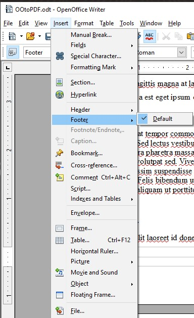
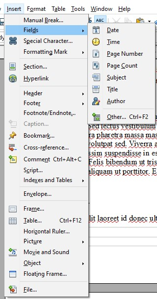

Examples
Editing PDF page number formatting specifications using Adobe Acrobat Pro
This example is shown with Adobe Acrobat Pro. There are other software tools that perform similar functions.
The example document converted from Microsoft Word has 4 pages, numbered i, ii, iii, iv, and 1. This is specified In Word using the Format Page Numbers in the Page Number option in Word's Insert ribbon.
In this document, a new section has been created with page numbering beginning with Arabic numeral 1 on the fourth page of the document. The document was then converted to PDF from Word.
In Adobe Acrobat Pro:
- Select the Organize Pages tool;
- Select the the pages that need their numbering updated;
- Open the context menu and select the Page Labels... option;
- Select the Page Numbering option;
- Use the Begin New Section settings to update the page numbering style.

To correct the page numbers:
- Select the pages to be renumbered
- Access the context menu for the selected pages and select Number Pages
- In the Page Numbering dialog, select the lowercase Roman numeral style and the starting page (1 by default, which is correct in this case)
- Select OK
The following image shows the Page Numbering dialog and selections.
Follow the same process to change the fifth page number to Arabic numeral 1.
The following image shows the correct page numbers for the 5 pages.
This example is shown in operation in the working example of specifying page numbers in a document converted from Word (Word file) and working example of specifying page numbers in a document converted from Word (PDF file).
Adding Page Numbers in OpenOffice Writer
To add page numbering in OpenOffice with Writer, the user needs to add a footer from the Insert dropdown.
After inserting the footer, click in the footer then select Insert ← Fields ← Page Number.
Specifying page numbers using the /PageLabels entry
The following code fragment illustrates code that is typical for specifying multiple page numbering schemes in a document.
The example below is for a document with pages labeled: i, ii, iii, iv, 1, 2, 3, A-8, A-9, ...
This numbering scheme requires 3 page-label dictionaries (for lowercase Roman, Arabic, and prefixed numbers)
1 0 obj
<< /Type /Catalog
/PageLabels << /Nums [ 0 << /S /r >> % lowercase Roman numerals
4 << /S /D >> % Arabic numerals
7 << /S /D % Arabic numerals with ...
/P (A-) % the prefix "A-"...
/St 8 % starting at page 8
>>
]
>>
...
>>
endobj
Page labels are specified as follows:
-
/Sspecifies the numbering style for page numbers:-
/D- Arabic numerals (1,2,3...) /r- lowercase Roman numerals (i, ii, iii,...)/R- uppercase Roman numerals (I, II, III,...)/A- uppercase letters (A-Z)/a- lowercase letters (a-z)
-
/P(optional) - page number prefix/St(optional) - the value of the first page number in the range (default: 1)